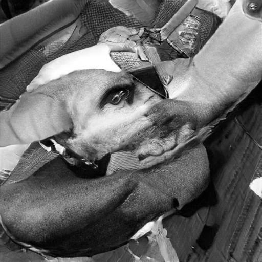
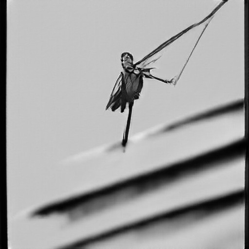
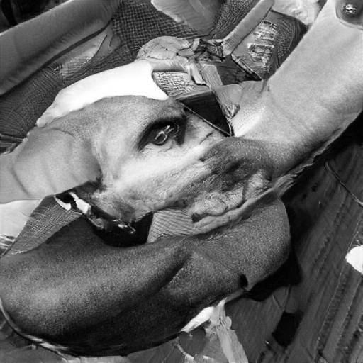
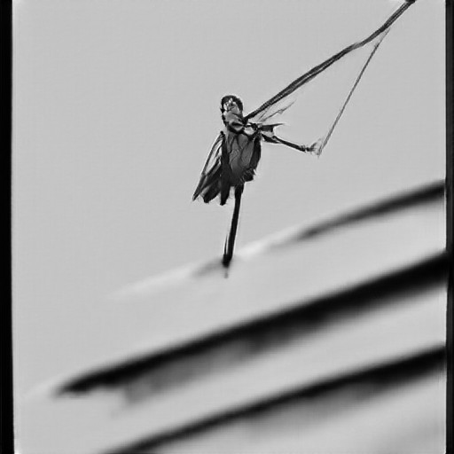

i told myself this wouldn’t happen—tht i wouldn’t care and tht this was only a fling—but here i am, on his side of the bed inhaling the scent of his cologne, searching for it in the pillows and near the edge of the blanket where he’d tucked me in, kissed my forehead and then left to catch his flight back to sf, like my life depends on it. cuz the rest of the apartment is bare of him. all of his stuff, gone like he was never here. and i’m searching for the particles of him tht are left, to convince myself he wasn’t a dream and pretend tht he’s still here with me even though his life is at sf. to convince myself that the conversations with me in his arms, left hand draped on the small of my waist and right curled around my shoulder over my chest to hold my hand , his beard resting against my head, scratching, talking abt home and family and dreams and sadness and guilt are just as real as his absence. because the silence is deafening now.
i don’t love him, i’m not foolish and i’ve learned from my rages of emotion. but damn do i wish i could allow myself to love someone like him. damn do i wish i could wake up and trace the dip of his shoulder into his bicep and watch how the sunlight cascades onto his chest and mingles on his eyelashes. that i could just escape into him, into us, whenever i wanted.
i wish he’d left something behind, a tshirt or note or sock even. i wish i could hang on to this because even though i know that i can’t have him, even though i know that i might never ever see him or touch him or hear his voice again, what really breaks me is that this exactly is what i chose and will choose. this exactly is what i’m sacrificing for my own freedom and ambition and determination and it kills me that i cant have it all. that for the right people, it’ll never be the right time. that i’m not strong enough to hold someone and so easily let them go.
i can barely smell him in the blanket anymore. and there’s an empty tear dried down the side of face.
Mama started seeing the Man during one of our typical hot summers. When we looked out on our fading baby-blue porch down the gravel driveway those days, the world near the surface looked like it would melt into a version of the butterscotch candies that we sucked to our cheeks.
I remember even the mice around the cornfields seemed to slow in the heat, but we, all equal victims of heat, gave them mercy.
When Mama got back from the fields, the sweat that stuck to her skin and dribbled past her armpits made it look like.
the sun was trying to melt her away, too.
I don’t remember exactly when Mama started seeing the Man, but I do remember Pawpaw grumbling about it in the kitchen afterwards.
It must’ve been late at night because I remember smelling cigarette smoke drifted from the kitchen and hearing his raspy voice. Mama never let him smoke around us
—I think Mama liked to pretend we didn’t know about it—
but we were all familiar with the picture of Pawpaw with a cigarette pressed between his chapped lips sucking in dry wads of air.
Most nights, though, Mama and Pawpaw would sit around the old oak breakfast table after putting us four kids to bed.
“Darlene, don’t get yourself into that type of trouble… just think you’ll have to take care of eleven kids on top of all that haulin’ you already do in the fields.”
Then, the door slammed shut and all I could hear through the muffled wood was the occasional screeching of chairs as Mama or Pawpaw got up.
To this day, I’m not really sure why Mama decided to be with the Man.
Its not like we
needed a real man around the house anyway.
Mama did all the work around the house
and in the
yard, and my siblings and I tended to the pigs perfectly fine.
But none of us questioned Mama’s
actions.
Part of it was because it was awkwardly inappropriate to ask Mama about her
new lover,
but most of it was because Mama was tall, broad, and we never wanted to risk the next time
she’d bring out the belt.
Plus, if Mama knew she’d be taking on another seven kids, she must’ve
really saw something in the Man.

 


